8.2 CONSULTAR REGISTRO EXTENDIDO
Esta funcionalidad le permite al estudiante consultar todas las notas que él ha obtenido en el transcurso de su trayectoria académica. También le permite ver las notas asignadas en las materias homologadas. Dispone de la opción Imprimir.
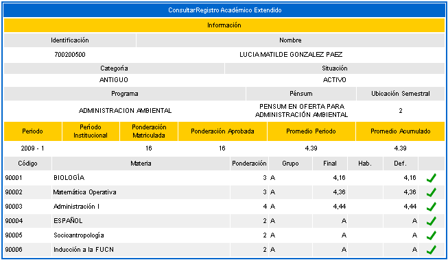
Opción Imprimir: Permite que se genera una impresión en formato pdf de las notas históricas del estudiante, tal como se muestra en la siguiente imagen.
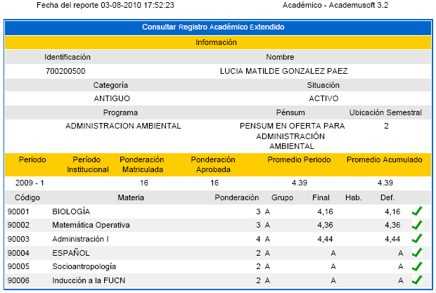
9. CERTIFICADO DE ESTÍMULO DE ESTUDIANTE
Esta funcionalidad le permite al estudiante ver los estímulos que le ha otorgado la institución educativa por destacarse en áreas específicas como: deportes, área cultural (teatro, danzas), nivel académico (alto rendimiento en las notas obtenidas), entre otras. La consulta puede realizarla por años de asignación, o puede hacerla sin identificar el año y así podrá ver todos los estímulos otorgados. Debe seleccionar el año y luego dar clic sobre la opción Buscar.
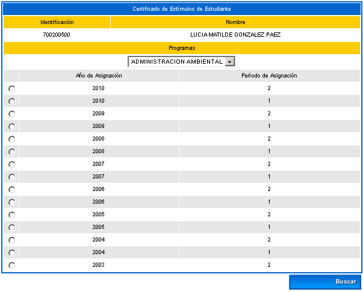
Se despliega una interfaz que le muestra un listado de los estímulos asignados al estudiante en su trayectoria académica en la institución. Cuenta con la opción de Imprimir si así lo desea.
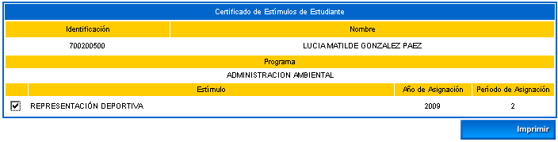
Opción Imprimir: Al dar clic sobre ésta opción, el sistema genera una previsualización como se muestra en el siguiente ejemplo, luego se puede enviar físicamente el archivo a la impresora disponible o almacenarlo en un medio magnético.
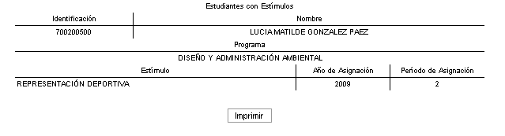
Esta funcionalidad le permite al estudiante consultar las deudas que tenga con una de las dependencias o unidades de la institución educativa tales como: laboratorio, bienestar universitario, u otro concepto que puede ser cargado desde el aplicativo académico en la funcionalidad: Recursos Académicos / Deudas / Deudas por estudiante. Al realizar la consulta se muestra una interfaz como se indica a continuación en el ejemplo:
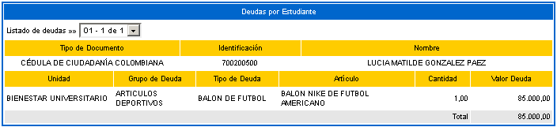
Estas deudas pueden o no ser cargadas a la cuenta del estudiante. Para el caso en el cual el administrador cargue la deuda del estudiante, este valor se verá reflejado en la consulta de la liquidación del alumno.
A continuación se muestra un ejemplo en la consulta de la liquidación del estudiante cuando tiene asociada una deuda en académico:
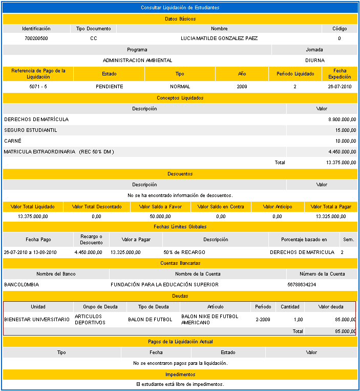
11. DEMANDA DE MATERIAS POR ESTUDIANTE
Esta funcionalidad le permite al estudiante verificar las posibles materias demandadas, dependiendo de su situación académica, la cual involucra las materias aprobadas, los requisitos y correquisitos que esté cumpliendo en el actual periodo académico en el que se esté matriculando. Inicialmente el sistema muestra una interfaz en la cual el alumno debe elegir un programa de la lista (Se aclara que el estudiante puede estar en uno o varios programas en forma simultánea). Luego debe dar clic sobre la opción Continuar.
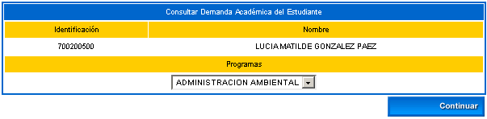
El sistema genera nuevamente una interfaz en la cual se muestran las materias demandadas por el alumno distribuidas en cada periodo académico habilitado por la institución.
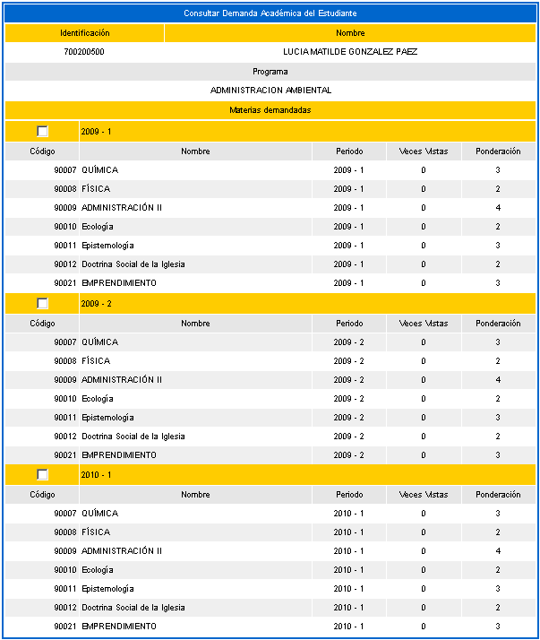
El sistema dispone de la opción Imprimir para que el estudiante descargue el archivo en formato pdf que se muestra a continuación:
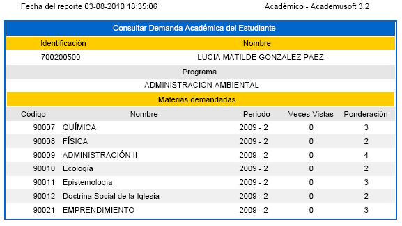
Esta funcionalidad le permite al estudiante revisar el contenido del pensum, verificar la distribución de las materias en cada uno de los períodos académicos, observar los requisitos y correquisitos que éste debe tener presente en sus respectivos procesos de demanda, matrícula académica y cancelación de asignaturas, igualmente puede consultar el contenido temático de las materias. El sistema despliega una interfaz en la cual debe seleccionar uno de los programas en los cuales se encuentra activo. Debe elegir el registro de su interés y luego dar clic sobre la opción Continuar.
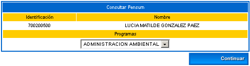
El sistema muestra una interfaz en la cual se listan las asignaturas que conforman el pensum que tiene activo el alumno debidamente organizado por períodos académicos. Si desea consultar los contenidos de la asignatura deberá seleccionar el registro de su interés y luego dar clic sobre el ícono Contenidos de ítems de materia.
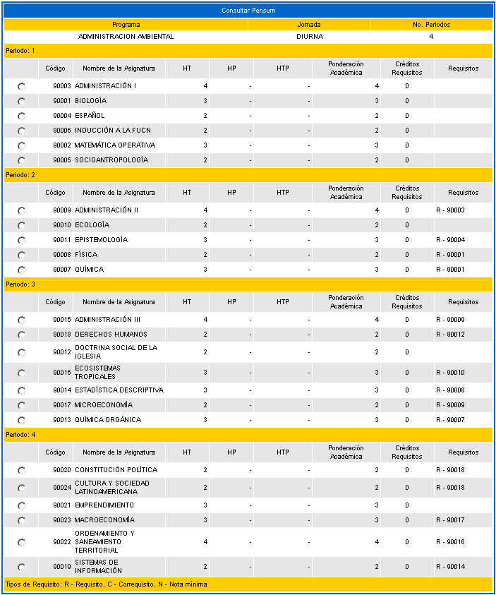
12.1 CONTENIDOS DE ITEMS DE MATERIA
Esta funcionalidad permite al estudiante revisar constantemente el contenido temático de las asignaturas que hacen parte de su pensum. Debe elegir una de las materias y luego dar clic sobre éste ícono, se despliega una interfaz en la cual se muestra una lista de los ítems que conforman la estructura básica del contenido de la materia, se debe seleccionar uno de los ítems y luego dar clic sobre la opción Continuar.
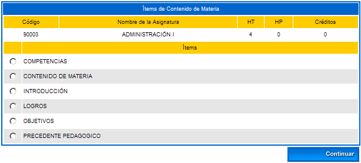
El sistema muestra el respectivo contenido del ítem seleccionado. Al seleccionar el registro puede dar clic sobre la opción Ver para previsualizar el mismo.
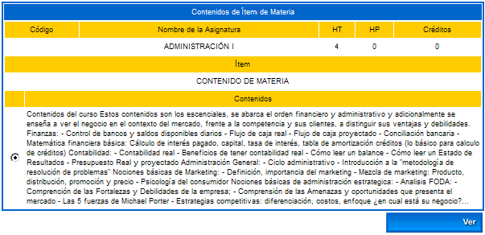
El sistema muestra una previsualización del contenido del ítem de materia elegido.
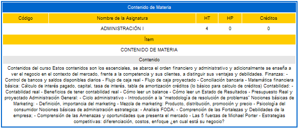
Funcionalidad que permite que el estudiante realice en línea el proceso de cancelación de las asignaturas que tiene matriculadas. Esto se realiza dentro de las fechas estipuladas en el calendario académico. Inicialmente el alumno debe elegir el programa de su interés y luego dar clic sobre la opción Continuar.
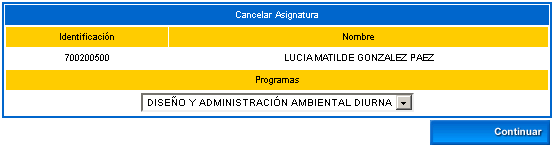
El sistema despliega una interfaz en la cual se debe elegir el objeto de cancelación, seleccionar el registro y luego dar clic sobre el ícono Cancelar Materia. Es importante aclarar que de acuerdo a la estructura curricular del programa algunas asignaturas pueden NO ser cancelables, como se indica en el siguiente ejemplo, en el cual la materia Administración II no es cancelable.
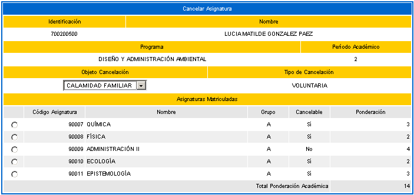
Realizada la acción sobre el ícono Cancelar Materia, el sistema solicita confirmación de la cancelación, si la respuesta es afirmativa se emitirá un mensaje indicando el éxito del proceso.
Esta funcionalidad permite que el estudiante desde su Vortal gestione la solicitud para el intercambio. El intercambio es un proceso en el cual el alumno continúa actividades académicas o laborales en una institución educativa del exterior. Se contemplan tres situaciones:
1. Cuando el estudiante de cualquier semestre se presenta a la oficina responsable de estos trámites para realizar cursos de idiomas.
2. Cuando el estudiante se va a cursar materias equivalentes a los contenidos programados en su pensum.
3. Cuando el estudiante se va a desempeñar actividades laborales.
Inicialmente el alumno diligencia la solicitud seleccionando el programa al cual pertenece, luego da clic sobre la opción Continuar.
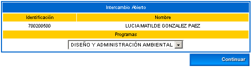
Inicialmente no se muestra ningún intercambio. El estudiante dispone de las opciones de Agregar y Modificar.
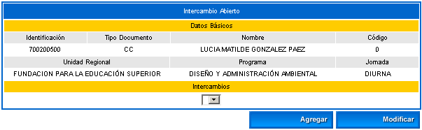
Opción Agregar: Esta opción le ofrece al alumno la posibilidad de gestionar la información completa del proceso de Intercambio, el sistema valida la duración en semanas con las fechas de inicio y fin del mismo. Una vez esté seguro de que la información diligenciada es la correcta deberá dar clic sobre la opción Registrar. El sistema solicita confirmación de la adición, si la respuesta es afirmativa se emitirá un mensaje indicando el éxito del proceso.
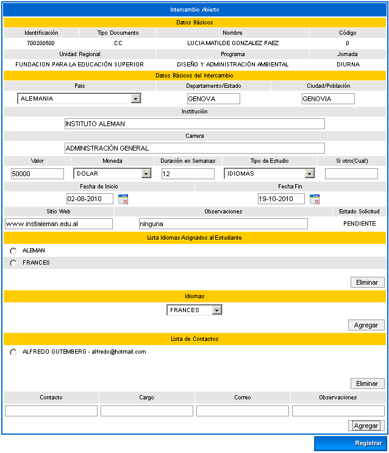
Una vez se ha diligenciado la información en forma adecuada el sistema muestra la interfaz que se indica a continuación:
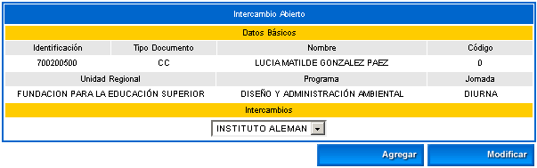
Opción Modificar: Esta opción le ofrece al alumno la posibilidad de cambiar la información completa del proceso de Intercambio, el sistema valida la duración en semanas con las fechas de inicio y fin del mismo. Una vez esté seguro de que la información diligenciada es la correcta deberá dar clic sobre la opción Registrar. El sistema solicita confirmación de la actualización, si la respuesta es afirmativa se emitirá un mensaje indicando el éxito del proceso. Se presenta la misma interfaz descrita en la opción agregar.